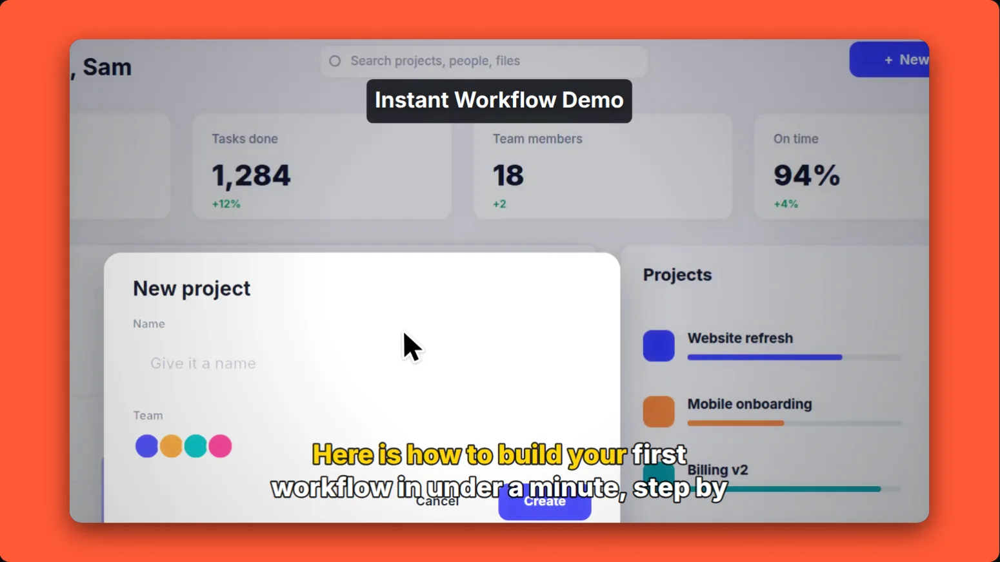
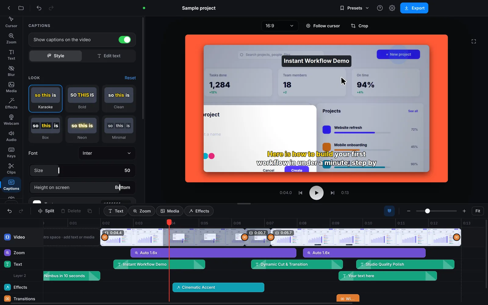

Screen recordings that look edited. Automatically.
Record your screen and Scrim adds smooth zooms where you click, a clean frame, a polished cursor and captions. Export for YouTube, TikTok or as a step by step guide in minutes.
Record once. It already looks produced.
No keyframes, no timelines full of tiny edits. Scrim watches your clicks, typing and voice, and does the tedious parts for you.
Zooms that follow your clicks
Every click becomes a smooth zoom, so viewers always see what matters. Your recording sits on a clean background with rounded corners and a soft shadow.
- Smooth cursor with click ripples and optional click sounds
- Wallpapers, live backgrounds, your own image or brand color
- Fine tune any zoom by dragging it on the timeline

Say it once, fix it in the text
Scrim turns what you say into captions that light up word by word. Delete words in the transcript and they're cut from the video. Remove every "um" and long pause in one click.
- Six caption styles, your font and colors
- Works offline on your PC, or fast online with Groq
- Save subtitle files for YouTube and LinkedIn

Your recording, as a written guide
Every click becomes a numbered step with a screenshot and the spot circled. Titles come from what you said. Save it as a PDF or a web page and send it to your team or customers.
- Edit titles, add notes, leave out steps
- Great for onboarding, support and how-tos

One click for every platform
Pick where it's going and Scrim sets it up: YouTube, TikTok, Reels, Shorts, LinkedIn, X, or a small GIF for your docs. Vertical videos follow your cursor, so nothing important gets cut off.
- Sharp exports up to your screen's full resolution
- Uses your graphics card when it can, so exports are quick

Smart trim
Finds the slow parts, like pages loading or you looking for a window, and speeds them up or cuts them.
Shortcuts on screen
Keyboard shortcuts you press show up as clean keycaps, so viewers can follow along. Your typing is never recorded.
Clear voice
Removes fan hum, keyboard noise and room echo, and evens out your volume. Any microphone sounds good.
Webcam bubble
Add your face in a circle or rounded box, anywhere on the video. Move and resize it right on the preview.
Brand kit
Save your logo, colors, font, intro and outro once. Put them on any video in one click.
Hide private info
Blur or block out emails, passwords and customer names. It stays hidden even when the view zooms in.
From idea to shared video in minutes
- 1
Record
Pick your screen, a window or a browser tab. Add your mic, PC sound and webcam. A small bar lets you pause or stop, and it never shows up in the video.
- 2
Polish
Scrim adds the zooms, frame and cursor for you. Tweak anything on a simple timeline: cut, speed up, add text, captions, music and transitions.
- 3
Share
Export for YouTube, TikTok, LinkedIn, a GIF, or a step by step guide. Your files stay on your PC.
Questions
Is Scrim free?
Yes. Download it and use every feature for free. There's no watermark on your videos.
Which computers does it run on?
Windows 10 and 11, for now. A graphics card makes recording and exporting faster, but it isn't required.
Do my recordings leave my computer?
No. Recordings, projects and exports stay on your PC. Captions can run fully offline. If you choose Groq for faster captions, only the sound is sent to be transcribed. Crash reports are off unless you turn them on. Read the privacy page.
Windows says "Unknown publisher" when I install it. Is it safe?
Yes. That message appears for new apps that aren't signed yet. Click "More info", then "Run anyway". Scrim updates itself after that.
How do updates work?
Scrim checks for new versions quietly and downloads them in the background. When one is ready, one click restarts into it.
I found a bug, or I have an idea.
We'd love to hear it. Use Report a problem or Suggest a feature, or the help button inside the app.